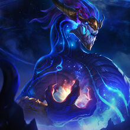
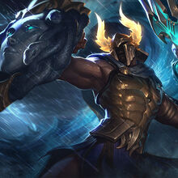
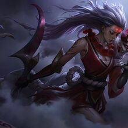
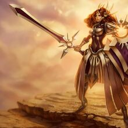

Region de Targon
Targon es una region ni grande ni pequeña, pero que esconde un poder inmenso, en la cima de su montaña mas alta, el Monte Targon, se encuentran Los Aspectos, dioses que representan diferentes aspectos, como la Guerra, el Sol o la Luna. Se cuenta que los mortales que sean capaces de escalar hasta la cima del Monte Targon, seran recompensados con el poder de un aspecto, y estos pasaran a ser los recipientes de estas deidades, quienes si no los consideran dignos, podrian incluso tomar su cuerpo por completo y oponerse a la voluntad del mortal.
Algunos de los campeones mas importantes de esta region son:
|  |  |  |  |
|---|